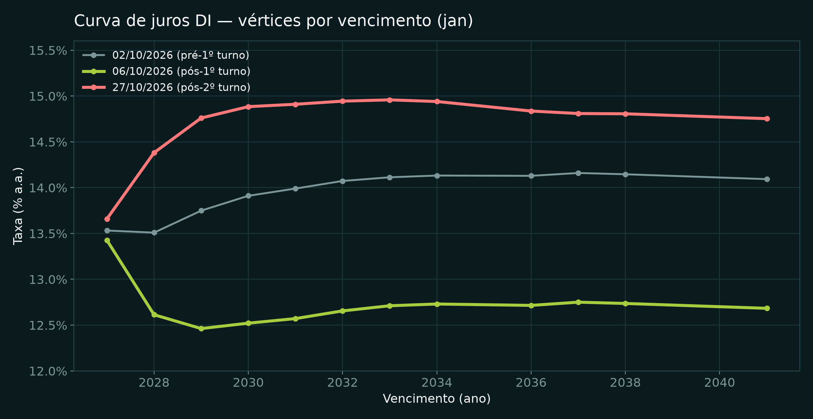
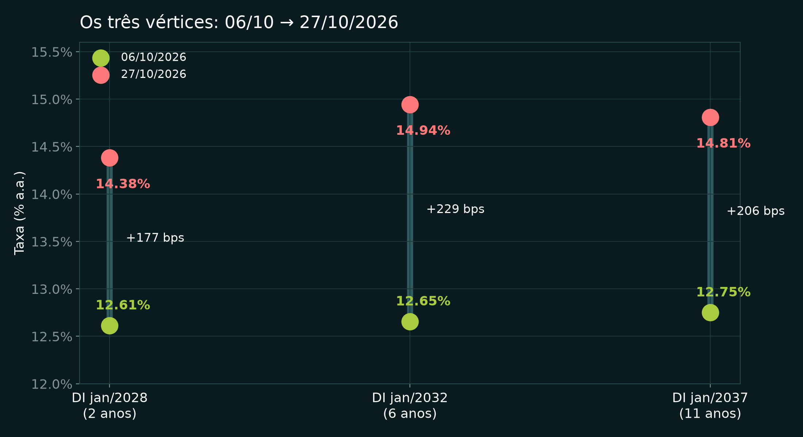
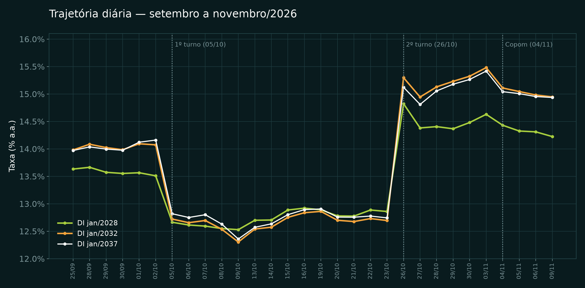
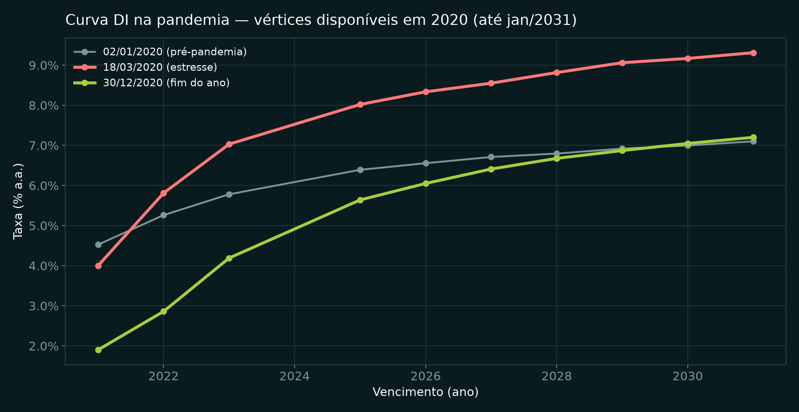
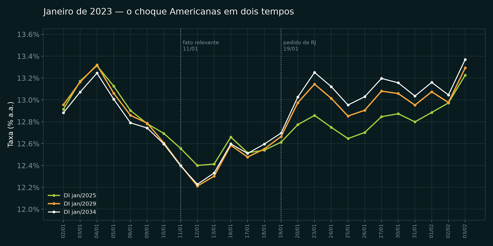
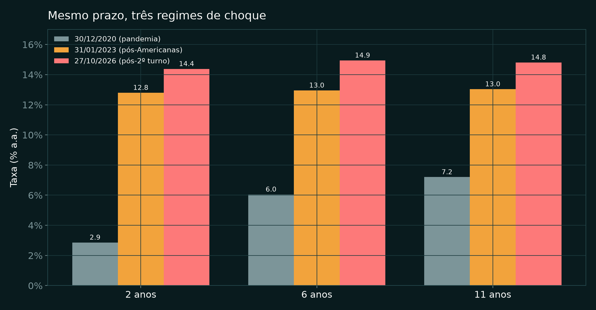
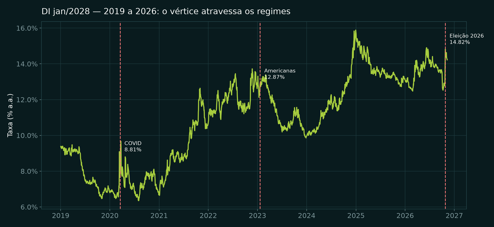

Vértices jan/2028, jan/2032 e jan/2037 entre 06/10 e 27/10/2026 — pós 1º e 2º turno — com o mesmo olhar sobre a pandemia (2020) e o caso Americanas (jan/2023).
1º turno (04/10), 2º turno (25/10) e Copom (04/11). O ajuste da curva não foi gradual: ele se concentrou nos pregões seguintes a cada evento.
1º turno — 04/10. O mercado retirou prêmio de risco: Ibovespa na casa dos 200 mil pontos (InfoMoney, 05/10) e curva DI de −90 a −140 bps em 05–06/10.
2º turno — 25/10, Lula reeleito (TSE, 26/10). Reversão violenta: Ibovespa −13% com circuit breaker e dólar +8% em 26/10; a curva abriu +196 a +260 bps em um único pregão.
27/10. Com intervenção do Tesouro, os juros futuros recuaram do pico — mas ficaram 180–230 bps acima do nível de 06/10.
Copom — 04/11. Selic mantida em 13,75% a.a., decisão tratada como surpresa.
Focus — 06/11. IPCA 5,22% (2026) e 4,90% (2027); Selic 13,75% e 12,50%; PIB 1,75% e 1,15%.
Itaú BBA — 30/10. PIB 2027 cortado de 1,2% para 0,5%; IPCA 2027 de 4,6% para 6,1%; Selic a 13,75% durante todo o 2027.
Em 06/10 a curva operava entre 12,5% e 12,9%, com o trecho curto invertido (2027 a 13,43% contra 2028 a 12,61%): o mercado precificava corte. Em 27/10 sobe ~2 pontos e ganha inclinação até 2032.

O vértice de 2032 é o que melhor mede o prêmio de risco fiscal: não responde à Selic de hoje, e sim à expectativa de juros e inflação no médio prazo. Foi ele que mais subiu.

| Vértice | 06/10 | 27/10 | Δ |
|---|---|---|---|
| jan/2028 | 12,61% | 14,38% | +177 bps |
| jan/2032 | 12,65% | 14,94% | +229 bps |
| jan/2037 | 12,75% | 14,81% | +206 bps |
| Selic meta | 13,75% | 13,75% | 0 bps |
Em 26/10, primeiro pregão após a confirmação da reeleição, o DI 2028 saltou de 12,86% (23/10) para 14,82% — +196 bps em um dia.
Fechamentos diários dos três vértices, 25/09 a 09/11/2026. Pico em 03/11 (14,63% / 15,48% / 15,42%) e devolução parcial até 09/11 (14,22% / 14,95% / 14,94%).

Em 2020 a curva se ajustou por dentro: o curto cedeu com a Selic e o longo abriu. Em 2023, um choque de crédito moveu a curva em dois tempos — caiu com o fato relevante e subiu com o pedido de recuperação judicial.


2, 6 e 11 anos em 30/12/2020, 31/01/2023 e 27/10/2026. Em 2020 a curva era empinada (4,3 pontos entre 2 e 11 anos); em 2023 e 2026 ela é plana (0,2 e 0,4 ponto) — mas ~13% com prêmio baixo contra ~14,8% com prêmio fiscal.

O DI jan/2028 já operou a 6,8% (2020), 12,1% (jan/2023), 13,5% (set/2026) e 14,8% (26/10/2026).

Cinco conclusões verificáveis nos dados de 2020, de 2023 e de 2026.
Mesmo conteúdo nos dois formatos: o PDF é a versão de leitura, o PPTX é o editável (9 páginas/slides).